Publications
2022
| 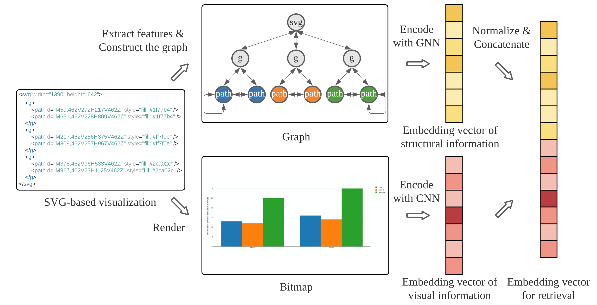 | Structure-aware Visualization Retrieval. Haotian Li, Yong Wang, Aoyu Wu, Huan Wei, and Huamin Qu. Proceedings of the SIGCHI Conference on Human Factors in Computing Systems (CHI 2022), 2022. To Appear. Best Paper Honorable Mentions Award Download: [paper] [Online Demo] |
| 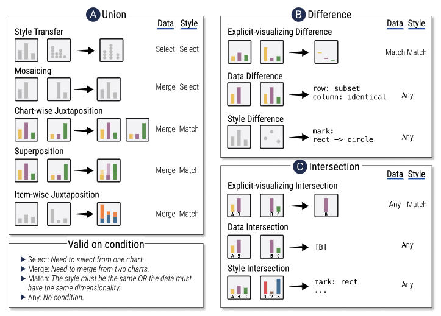 | ComputableViz: Mathematical Operators as a Formalism for Visualization Processing and Analysis. Aoyu Wu, Wai Tong, Haotian Li, Dominik Moritz, Yong Wang, Huamin Qu. Proceedings of the SIGCHI Conference on Human Factors in Computing Systems (CHI 2022), 2022. To Appear. Download: [paper] |
 | Who Will Support My Project? Interactive Search of Potential Crowdfunding Investors Through inSearch. Songheng Zhang, Yong Wang, Haotian Li, Wanyu Zhang. Extended Abstracts of the 2022 CHI Conference on Human Factors in Computing Systems, 2022. To Appear. Download: [paper] |
| 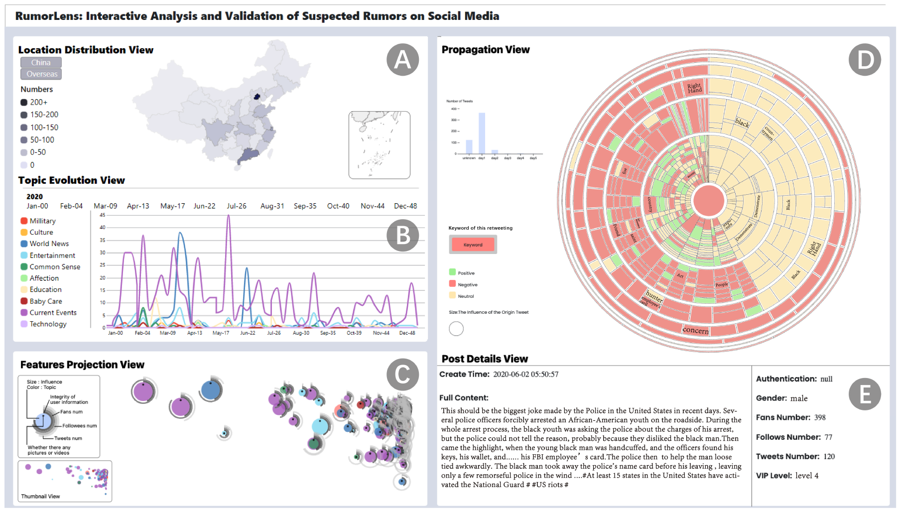 | RumorLens: Interactive Analysis and Validation of Suspected Rumors on Social Media. Ran Wang, Kehan Du, Qianhe Chen, Yifei Zhao, Mojie Tang, Hongxi Tao, Shipan Wang, Yiyao Li, Yong Wang. Extended Abstracts of the 2022 CHI Conference on Human Factors in Computing Systems, 2022. To Appear. Download: [paper] |
| 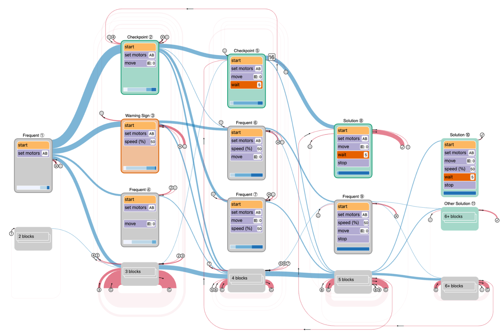 | BlockLens: Visual Analytics of Student Coding Behaviors in Block-Based Programming Environments. Sean Tsung, Huan Wei, Haotian Li, Yong Wang, Meng Xia, Huamin Qu. Proceedings of Learning at Scale 2022 (Work In Progress), 2022. To Appear. Download: [paper] |
 | GNNLens: A Visual Analytics Approach for Prediction Error Diagnosis of Graph Neural Networks. Zhihua Jin, Yong Wang, Qianwen Wang, Yao Ming, Tengfei Ma, and Huamin Qu. IEEE Transactions on Visualization and Computer Graphics. 2022. To Appear. Download: [paper] [Online Demo] [Open-sourced Package] |
| 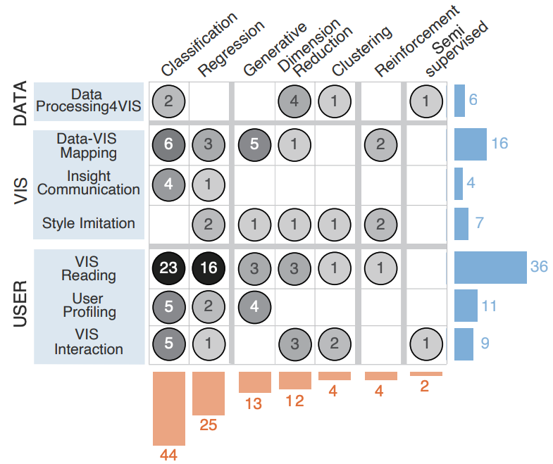 | A Survey on ML4VIS: Applying Machine Learning Advances to Data Visualization. Qianwen Wang, Zhutian Chen, Yong Wang and Huamin Qu. IEEE Transactions on Visualization and Computer Graphics. 2022. To Appear. Download: [paper] [Project Page] |
| 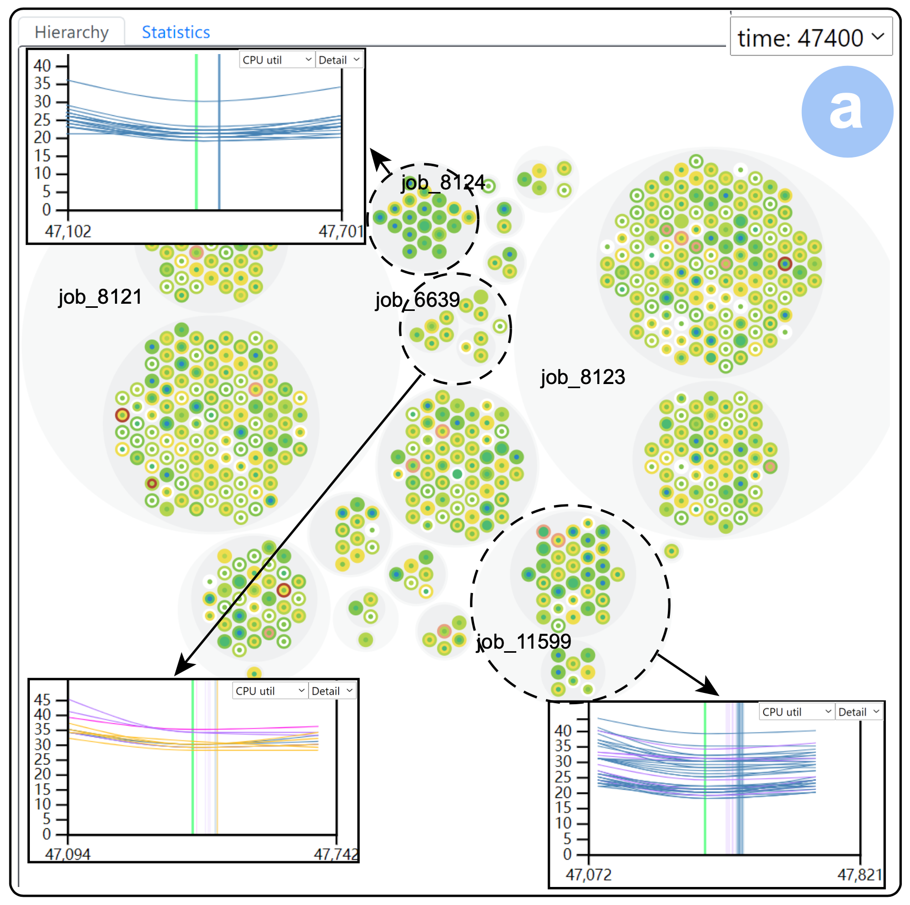 | BatchLens: A Visualization Approach for Analyzing Batch Jobs in Cloud Systems. Shaolun Ruan, Yong Wang, Hailong Jiang, Weijia Xu and Qiang Guan. Proceedings of Design, Automation and Test in Europe Conference (DATE) 2022. To Appear. Download: [paper] |
2021
 | KG4Vis: A Knowledge Graph-Based Approach for Visualization Recommendation. Haotian Li, Yong Wang, Songheng Zhang, Yangqiu Song and Huamin Qu. IEEE Transactions on Visualization and Computer Graphics (Proceedings of IEEE VIS 2021). 2021. To Appear. Best Paper Honorable Mentions Award Download: [paper] [Project Page] [Code] |
 | M^2Lens: Visualizing and Explaining Multimodal Models for Sentiment Analysis. Xingbo Wang, Jianben He, Zhihua Jin, Muqiao Yang, Yong Wang and Huamin Qu. IEEE Transactions on Visualization and Computer Graphics (Proceedings of IEEE VIS 2021). 2021. To Appear. Best Paper Honorable Mentions Award Download: [paper] [Video] [Project Page] |
| 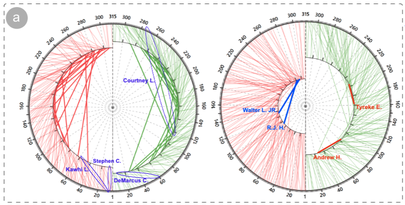 | Intercept Graph: An Interactive Radial Visualization for Comparison of State Changes. Shaolun Ruan, Yong Wang and Qiang Guan. Proceedings of IEEE VIS 2021 (Short Paper). 2021. To Appear. Download: [paper] |
 | DeHumor: Visual Analytics for Decomposing Humor. Xingbo Wang, Yao Ming, Tongshuang Wu, Haipeng Zeng, Yong Wang and Huamin Qu. IEEE Transactions on Visualization and Computer Graphics. 2021. Download: [paper] [Video] |
| 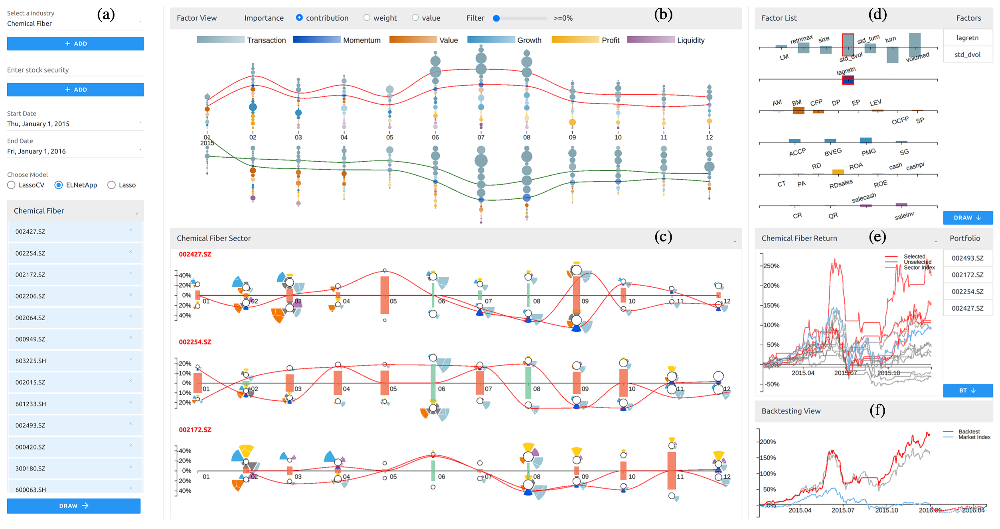 | iQUANT: Interactive Quantitative Investment Using Sparse Regression Factors. Xuanwu Yue, Qiao Gu, Deyun Wang, Huamin Qu and Yong Wang. Computer Graphics Forum (Proceedings of EuroVis 2021), 2021. To Appear. Download: [paper] [video] |
| A Visual Analytics Approach to Facilitate the Proctoring of Online Exams. Haotian Li, Min Xu, Yong Wang, Huan Wei and Huamin Qu. Proceedings of the SIGCHI Conference on Human Factors in Computing Systems (CHI 2021), 2021. To Appear. Download: [paper] [video] |
2020
 | Peer-inspired Student Performance Prediction in InteractiveOnline Question Pools with Graph Neural Network. Haotian Li, Huan Wei, Yong Wang, Yangqiu Song and Huamin Qu. Proceedings of the 29th ACM International Conference on Information and Knowledge Management (CIKM2020). To Appear. Download: [paper] |
| QLens: Visual Analytics of Multi-step Problem-solving Behaviors for Improving Question Design. Meng Xia, Reshika P. Velumani, Yong Wang, Huamin Qu and Xiaojuan Ma. IEEE Transactions on Visualization and Computer Graphics. To Appear. Download: [paper] | |
 | TaxThemis: Interactive Mining and Exploration of Suspicious Tax Evasion Group. Yating Lin, Kamkwai Wong, Yong Wang, Rong Zhang, Bo Dong, Huamin Qu and Qinghua Zheng. IEEE Transactions on Visualization and Computer Graphics. To Appear. Download: [paper] |
 | TradAO: A Visual Analytics System for Trading Algorithm Optimization. Ka Wing Tsang, Haotian Li, Fuk Ming Lam, Yifan Mu, Yong Wang and Huamin Qu. Proceedings of IEEE VIS 2020. Download: [paper] |
| Visual Analysis of Discrimination in Machine Learning. Qianwen Wang, Zhenghua Xu, Zhutian Chen, Yong Wang, Shixia Liu and Huamin Qu. IEEE Transactions on Visualization and Computer Graphics. To Appear. Download: [paper] | |
 | RankBooster: Visual Analysis of Ranking Predictions. Abishek Puri, Bon Kyung Ku, Yong Wang, Huamin Qu. In Proceedings of EuroVis 2020 (short paper), 2020. Download: [paper] |
 | VoiceCoach: Interactive Evidence-based Training for Voice Modulation Skills in Public Speaking. Xingbo Wang, Haipeng Zeng, Yong Wang, Aoyu Wu, Zhida Sun, Xiaojuan Ma and Huamin Qu. In Proceedings of the SIGCHI Conference on Human Factors in Computing Systems (CHI 2020), 2020. Download: [paper] |
 | DFSeer: A Visual Analytics Approach to Facilitate Model Selection for Demand Forecasting. Dong Sun, Zezheng Feng, Yuanzhe Chen, Yong Wang, Jia Zeng, Mingxuan Yuan, Ting-chuen Pong and Huamin Qu. In Proceedings of the SIGCHI Conference on Human Factors in Computing Systems (CHI 2020), 2020. Download: [paper] [video] |
 | Predicting Student Performance in Interactive Online Question Pools Using Mouse Interaction Features. Huan Wei, Haotian Li, Meng Xia, Yong Wang and Huamin Qu. In Proceedings of the 10th International Learning Analytics & Knowledge Conference (LAK20), 2020. Download: [paper] |
 | EmotionCues: Emotion-Oriented Visual Summarization of Classroom Videos. Haipeng Zeng, Xinhuan Shu, Yanbang Wang, Yong Wang, Liguo Zhang, Ting-Chuen Pong and Huamin Qu. IEEE Transactions on Visualization and Computer Graphics, 2020. Download: [project page] [paper] |
2019
| DeepDrawing: A Deep Learning Approach to Graph Drawing. Yong Wang, Zhihua Jin, Qianwen Wang, Weiwei Cui, Tengfei Ma and Huamin Qu. IEEE Transactions on Visualization and Computer Graphics (Proceedings of InfoVis 2019), 26(1):676-686, 2019. Download: [project page] [paper] [talk video] [BibTex] | |
| Nonuniform Timeslicing of Dynamic Graphs Based on Visual Complexity. Yong Wang, Daniel Archambault, Hammad Haleem, Torsten Moeller, Yanhong Wu, Huamin Qu. Proceedings of IEEE VIS 2019 (Short Paper), 2019. Download: [project page] [paper] [BibTex] | |
 | PlanningVis: A Visual Analytics Approach to Production Planning in Smart Factories. Dong Sun, Renfei Huang, Yuanzhe Chen, Yong Wang, Jia Zeng, Mingxuan Yuan, Ting-Chuen Pong and Huamin Qu. IEEE Transactions on Visualization and Computer Graphics (Proceedings of VAST 2019), 26(1):579-589, 2019. Download: [paper] [preview video] [ talk video] |
| Towards Automated Infographic Design: Deep Learning-based Auto-Generation of Extensible Timeline. Zhutian Chen, Yun Wang, Qianwen Wang, Yong Wang and Huamin Qu. IEEE Transactions on Visualization and Computer Graphics (Proceedings of InfoVis 2019), 26(1):917-926, 2019. Download: [project page] [paper] | |
 | EmoCo: Visual Analysis of Emotion Coherence in Presentation Videos. Haipeng Zeng, Xingbo Wang, Aoyu Wu, Yong Wang, Quan Li, Alex Endert and Huamin Qu. IEEE Transactions on Visualization and Computer Graphics (Proceedings of VAST 2019), 26(1):927-937, 2019. Download:[project page ] [paper ] [video] |
 | PeerLens: Peer-inspired Interactive Learning Path Planning in Online Question Pool. Meng Xia, Mingfei Sun, Huan Wei, Qing Chen, Yong Wang, Lei Shi, Huamin Qu, Xiaojuan Ma. The SIGCHI Conference on Human Factors in Computing Systems (CHI 2019), Glasgow, Scotland UK, May 2019. Download: [paper] |
 | Evaluating the Readability of Force Directed Graph Layouts: A Deep Learning Approach. Hammad Haleem, Yong Wang, Abishek Puri, Sahil Wadhwa and Huamin Qu. IEEE Computer Graphics and Applications (Special Issue on Visual Computing with Deep Learning), 39(4):40-53, 2019. Download: [paper] |
2018
| Towards Easy Comparison of Local Businesses Using Online Reviews. Yong Wang, Hammad Haleem, Conglei Shi, Yanhong Wu, Xun Zhao, Siwei Fu and Huamin Qu. Computer Graphics Forum (Proceedings of EuroVis 2018), 37(3):63-74, 2018. Download: [paper] [slides] [video] | |
| Visualizing Research Impact Through Citation Data. Yong Wang, Conglei Shi, Liangyue Li, Hanghang Tong and Huamin Qu. ACM Transactions on Interactive Intelligent Systems (TiiS), 8(1):5, 2018. Download: [paper][link] | |
 | VisForum: A Visual Analysis System for Exploring User Groups in Online Forums. Siwei Fu, Yong Wang, Yi Yang, Qingqing Bi, Fangzhou Guo and Huamin Qu. ACM Transactions on Interactive Intelligent Systems (TiiS), 8(1):3, 2018. Download: [paper][link] |
| Fast and Robust Segmentation of White Blood Cell Images by Self-supervised Learning Xin Zheng, Yong Wang, Guoyou Wang and Jianguo Liu. Micron, 2018(107): 55-71. Download: [paper] [link] | |
| A Vector Field Design Approach to Animated Transitions. Yong Wang, Daniel Archambault, Carlos E. Scheidegger and Huamin Qu. IEEE Transactions on Visualization and Computer Graphics, 24(9), pp.2487-2500, 2018. (Invited to SIGGRAPH 2019 as 1 of 4 top TVCG papers) Download: [project page] [paper] [link] [slides(pdf)] [slides(ppt)] [BibTex] |
2017
| SkyLens: Visual Analysis of Skyline on Multi-dimensional Data. Xun Zhao, Yanhong Wu, Weiwei Cui, Xinnan Du, Yuan Chen, Yong Wang, Dik Lun Lee and Huamin Qu. IEEE Transactions on Visualization and Computer Graphics (Proceedings of VAST 2017). Download: [paper] [link] | |
| Is the Whole Greater Than the Sum of Its Parts? Liangyue Li, Hanghang Tong, Yong Wang, Conglei Shi, Nan Cao and Norbou Buchler. 23rd ACM SIGKDD Conference on Knowledge Discovery and Data Mining (KDD), 2017. Download: [paper] [link] [Youtube] [code] | |
| UI X-Ray: Interactive Mobile UI Testing Based on Computer Vision. Chun-Fu (Richard) Chen, Marco Pistoia, Conglei Shi, Paolo Girolami, Joseph W. Ligman and Yong Wang. Proceedings of the 22nd International Conference on Intelligent User Interfaces (IUI) . ACM, 2017. Best Paper Award Download: [paper] [link] |
{kind=link}
2016
| 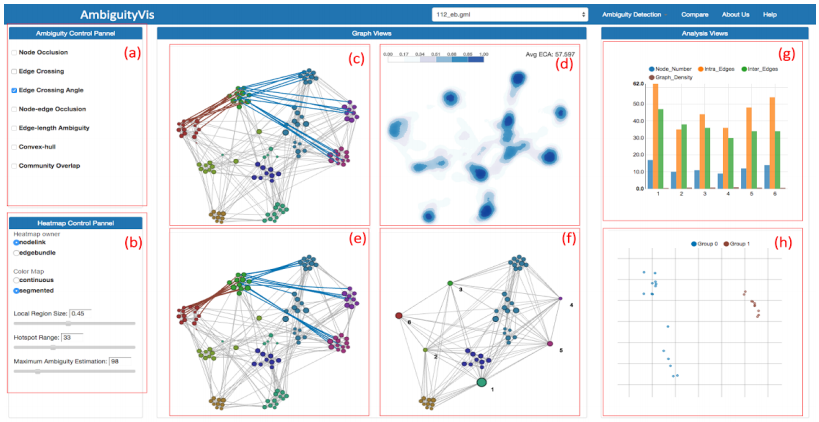 | AmbiguityVis: Visualization of Ambiguity in Graph Layouts. Yong Wang, Qiaomu Shen, Daniel Archambault, Zhiguang Zhou, Min Zhu, Sixiao Yang and Huamin Qu. IEEE Transactions on Visualization and Computer Graphics, 22(1), pp.359-368, 2016 (Proceedings of infoVis 2015). Download: [paper] [video] [link] |
Before 2015
| A Novel Algorithm Based on Visual Saliency Attention for Localization and Segmentation in Rapidly-Stained Leukocyte Images. Xin Zheng, Yong Wang, Guoyou Wang and Zhong Chen. Micron, 2014(56): 17-28. Download: [paper] [link] | |
| A palm vein identification system based on Gabor wavelet features. Ran Wang, Guoyou Wang, Zhong Chen, Zhigang Zeng and Yong Wang. Neural Computing and Applications, 24(1): 161-168, 2014. Download: [paper] [link] | |
| 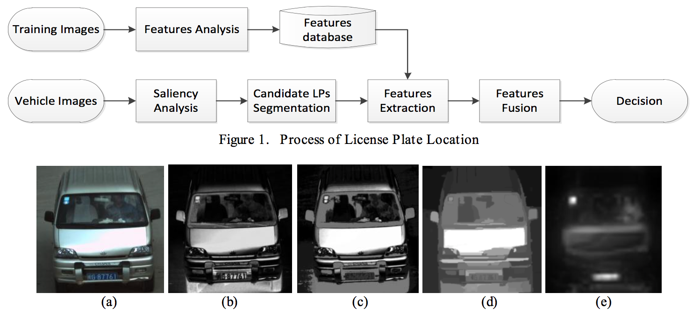 | A Novel and Robust Algorithm for License Plate Location Us ing Perceptual Salient Features. Yong Wang, Guoyou Wang, Ran Wang, Yuanchun Xia and Zhong Chen. In Proceedings of 2013 International conference on Advances in Industrial Control, Electronics and Computer Engineering. Kinston, Canada, May 2013. Download: [paper] [link] |
| White Blood Cell Segmentation Using Expectation-Maximization and Automatic Support Vector Machine Learning. Xin Zheng, Guoyou Wang, Yong Wang. Journal of Data Acquisition and Processing (Chinese), 2013, 28(5): 614-619. Download: [paper] [link] |
Posters and Demos
| 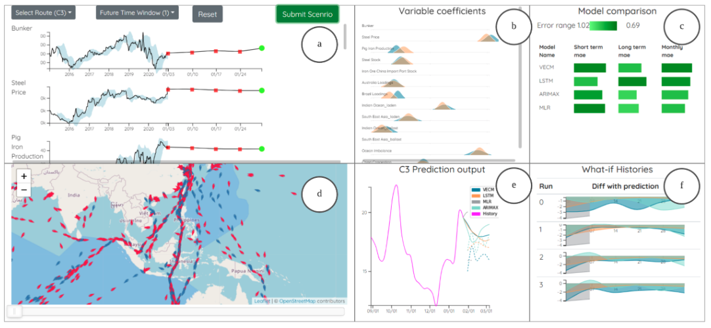 | Interactive Probing of Multivariate Time Series Prediction Models: A Case of Freight Rate Analysis Haonan Xu, Haotian Li and Yong Wang. Proceedings of IEEE VIS 2021 Poster, 2021. Download: [paper] |
| 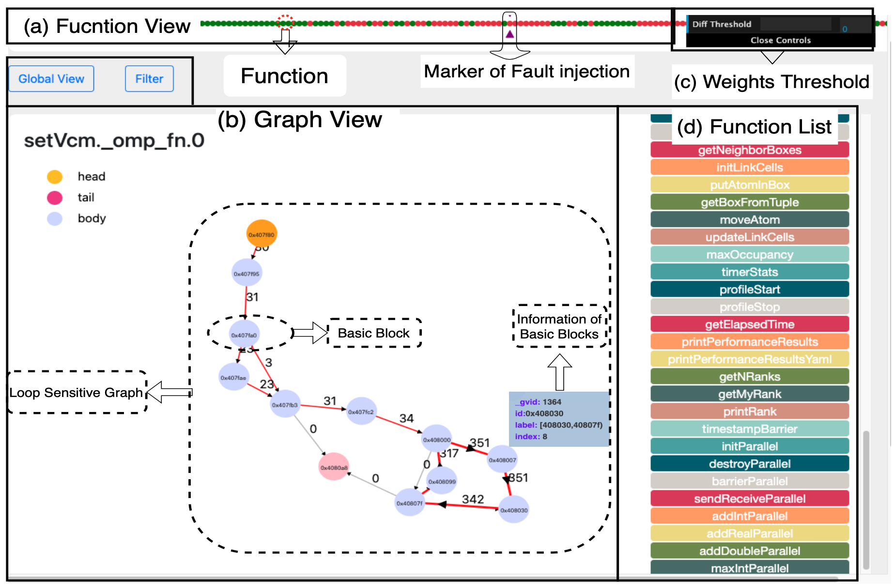 | Visilence: An Interactive Visualization Tool for Error Resilience Analysis Shaolun Ruan, Yong Wang and Qiang Guan. Proceedings of IEEE VIS 2021 Poster, 2021. Download: [paper] |
| 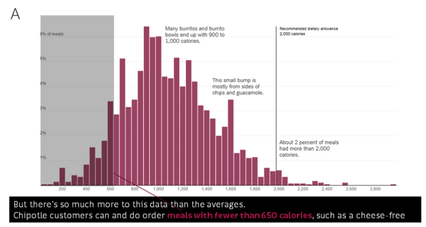 | Visionary Caption: Improving the Accessibility of Presentation Slides Through Highlighting Visualization Carmen Yip, Jie Mi Chong, Sin Yee Kwek, Yong Wang and Kotaro Hara. Proceedings of ASSETS ’2021 Poster, 2021. Download: [paper] |
| Visual Analytics of Student Learning Behaviors on K-12 Mathematics E-learning Platforms Meng Xia, Huan Wei, Min Xu, Leo Yu Ho Lo, Yong Wang, Rong Zhang, Huamin Qu. Proceedings of IEEE VIS 2019 Poster, 2019. Best Poster Award Download: [paper] |
Online Demos
 | Visualization of HKUST CSE PQE-Defense Log Data. Description: This project aims at making use of the log data of all the thesis defense and qualifying exams of HKUST CSE department, which are published in HKUST CSE Department website, to give users an overview of all the graduated students in CSE department. We want to answer these questions easily: How many students have graduated from CSE department? How many students have been supervised by each professor and what is the student's gender distribution? What is the distribution of defense/PQE time in each year? Who quited? Project Demo: [link] |
| HKUST Co-authorship Graph. Description: How can we intuitively know the collaboration relationship of all the HKUST professors? How can we easily gain an overview of each professor's publication trend and their collaboration changes along with the time? By using the publication data of all the HKUST professors that can be found in HKUST Scholarly Publications, we will enable users to answer all these questions easily. This project has been integrated into the official website of HKUST Scholarly Publications and published by HKUST Library. Project Demo: Take Prof. Tony F. Chan as an example: [link] | |
Patents
| May 2021 | System and Method for Visual Analysis of Emotional Coherence in Videos. Haipeng Zeng, Xingbo Wang, Aoyu WU, Yong Wang, Quan Li and Huamin Qu. US Patent: US20210073526A1. Download:[link] |
| June 2016 | A Precise Segmentation Method and System Based on SVM for White Blood Cell Images. Guoyou Wang, Yong Wang, Xin Zheng and Ran Wang. Chinese Patent: CN103473739 A, 2013-12-25. Download:[link] |
Talks and Presentations
| July 2021 | Visualization Meets AI: Automated Visualization Design and Evaluation. Zhejiang University. Virtual Talk |
| June 2021 | Visual Analytics of Big Data: Applications in Finance and Business. Tsinghua-SMU Finance Joint Master Program. SMU, Singapore |
| April 2021 | Automated Visualization Design and Evaluation. Alibaba AntV. Virtual Talk |
| Dec. 2019 | Visualization Meets AI: Visual Analytics for Big Data Analysis. Sun Yat-sen University. Guangzhou, China |
| Nov. 2019 | Deep Learning Based Approaches for Graph Drawing and Its Evaluation. Shenzhen Institutes of Advanced Technology (SIAT), Chinese Academy of Sciences (CAS). Shenzhen, China |
| Oct. 2019 | DeepDrawing: A Deep Learning Approach to Graph Drawing. IEEE VIS 2019. Vancouver, Canada. |
| Oct. 2019 | Nonuniform Timeslicing of Dynamic Graphs Based on Visual Complexity. IEEE VIS 2019. Vancouver, Canada. |
| July. 2019 | Visualization Meets AI: Visual Analytics for Big Data Analysis. Hunan University. Changsha, China |
| July 2019 | A Vector Field Design Approach to Animated Transitions. SIGGRAPH 2019. Los Angeles, USA. |
| July 2019 | Deep Learning Based Approaches for Graph Drawing and Its Evaluation. Shandong University. Qingdao, China. |
| April 2019 | Visual Analytics of MOOC data. The training program course for the faculties of Captital Normal University, HKUST. Hong Kong, China. |
| Oct. 2018 | A Vector Field Design Approach to Animated Transitions. IEEE VIS 2018. Berlin, Germany. |
| June 2018 | Towards Easy Comparison of Local Businesses Using Online Reviews. EuroVis 2018. Brno, Czech Republic. |
| May 2017 | Reveal the Ambiguity Behind Data Through Visualization Shenzhen Institutes of Advanced Technology, Chinese Academy of Sciences. Shenzhen, China. |
| Oct. 2015 | AmbiguityVis: Visualization of Ambiguity in Graph Layouts. IEEE VIS 2015. Chicago, USA |